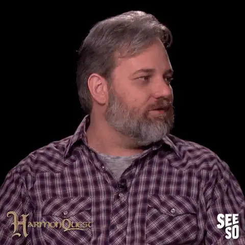
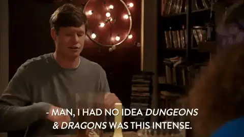
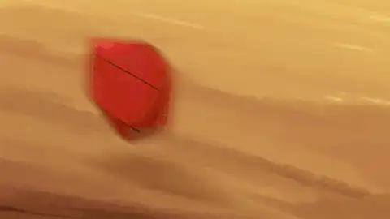
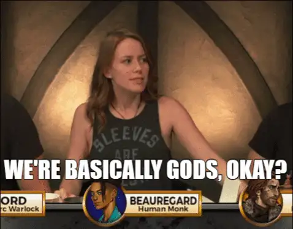
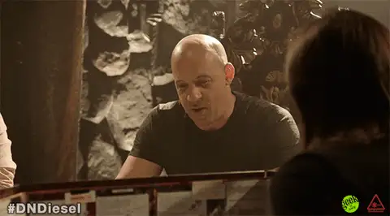
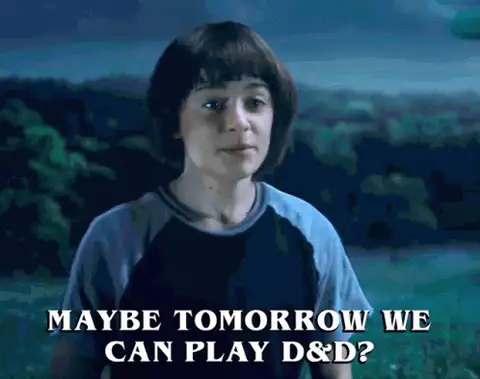

Diario de un Robot · 22 de noviembre de 2020November 22, 2020
Qué es y cómo ganar Dungeons & Dragons
Hace años que juego juegos de rol y cada vez que sale el tema surge la misma pregunta: '¿Cómo se gana?'
This essay is only available in Spanish for now.
Hace años que juego juegos de rol y cada vez que sale el tema surge la misma pregunta:
“¿Cómo se gana?”
Para quienes ya conozcan el ámbito, aclaro que juego mayoritariamente Dungeons & Dragons 5ta edición (sí, llevo el sello de nerd pegado en la frente). Mi respuesta parte de esa base, pero creo que aplica a todos los juegos de rol. La pregunta anterior es la más difícil de contestar sin sonar naif: “divirtiéndose” es la respuesta que desearía dar siempre, pero sé que no suele ser aceptada como final. “Bueno, pero ¿cómo se juega entonces?” suele ser la continuación. Esto demuestra una tendencia habitual asumida en los juegos de mesa: aprendiendo cuál es el modo de ganar aprendemos las reglas, o al menos se justifican acorde. Los juegos de rol tienen poco de esto.

Si queremos proponer un objetivo para D&D tenemos que hablar en dos niveles: el personaje y el jugador. Dentro del juego cada uno interpreta, toma el rol (de ahí el nombre), de un personaje de fantasía; este puede ser al estilo clásico medieval como en D&D, pero encontramos infinitas variaciones: ciencia ficción, zombis, militar, vampiros, terror o incluso franquicias como Star Wars, El señor de los anillos o Game of Thrones. El objetivo del personaje está determinado por la historia que inventamos para él, puede ser vengar la muerte de su padre a manos del villano, conseguir tesoros y riquezas o robar un poderoso artefacto mágico. Este objetivo está a su vez condicionado por la propia vida del personaje, no podemos vengar a nadie si nos mata un goblin al arrancar la aventura. El riesgo de perder a nuestro personaje es real y fruto de las decisiones que tomemos dentro del juego.
El nivel del jugador, además de abarcar todo lo relativo a su personaje, tiene como objetivo encontrarle sentido a lo que hace, divertirse. ¿Cómo se logra?

En primer lugar tenemos dos tipos de jugadores: el director del juego (DJ) y los jugadores. El primero es quien presenta la narrativa en forma de una aventura o setting (escenario), crea la situación inicial, diseña las peripecias y responde a las acciones que tomen los jugadores. El DJ funciona como todas las voces de los personajes no jugadores (NPC) y encarna a los adversarios. Además, es el juez que interpreta las reglas del juego y hace de mediador entre los jugadores: es la máxima autoridad en la mesa. Los demás son los jugadores que interpretan a sus personajes. La cantidad puede variar, desde el ultrapersonal uno con uno, pasando por el clásico grupo (party) de cuatro o cinco, hasta las locuras de diez u once personas gritando sus delirios alrededor de una mesa.
El objetivo grupal consiste en ponerse de acuerdo entre tantos y construir una narrativa colectiva y colaborativa. Es así como el DJ presenta una situación inesperada para los personajes que a su vez responden de formas igual de sorpresivas. Manteniéndose cada uno dentro de su rol obtenemos una gran sesión de improvisación. Pero, ¿cómo nos ponemos de acuerdo?

Los juegos de rol no funcionan como los juegos de mesa tradicionales, poco tienen que ver con el Monopoly o el TEG por fuera de usar dados. La mayoría consisten en una serie de reglas que los jugadores tienen a su disposición para limitar y encauzar las acciones de los personajes. Si cuando éramos pequeños los conflictos se dirimían según quién gritaba más veces “espejito rebotín” o “tengo un escudo que me defiende de tu ataque”, “pero yo tengo un rayo láser que rompe tu escudo”, en los juegos de rol lo resolvemos con una mezcla de reglas y azar.
Aquí entra el símbolo que representa a los jugadores como el ojo Illuminati: el dado de 20 caras. Aunque no sea necesario en todos los sistemas, funciona como la gran distinción que nos identifica en todos lados. Los dados definen la probabilidad de que la acción elegida suceda. Gracias a ellos, podemos ponernos de acuerdo en lo que es justo dentro del juego y maximizar la diversión al establecer causas y consecuencias claras (si rolleás más de ocho te escapás del villano, si no te encierra en un calabozo). Dándole un cauce a la imaginación permitimos que fluya sin problemas. La idea es poder dar cabida a nuestra fantasía.

Es así como se establece la búsqueda de poder dentro del juego. Dungeons & Dragons tiene un sistema de niveles que, al igual que su dado, va del 1 al 20. Mientras vamos metiéndonos en el juego, invirtiendo tiempo y compenetrándonos con la historia, logramos mayor entusiasmo a la hora de jugar y las recompensas se exacerban. El sistema de juegos de rol logra un nivel de entusiasmo, continuidad y libertad casi imposible de encontrar en videojuegos u otros juegos de tablero. Solo dentro de esta gran simulación puede uno tomar cualquier decisión por su personaje y encontrar resultados de lo más inesperados. El mayor atractivo del juego es la libertad narrativa y la capacidad de construir una aventura entre tantas perspectivas como jugadores. Pero, a fin de cuentas, ¿quién juega estos juegos?

En el imaginario popular están habitualmente asociados a un público masculino e introvertido, generalmente dentro de un sótano. En la actualidad cambió mucho desde su primera aparición de la mano de Gary Gygax (cocreador del juego). En mi experiencia jugué desde la primaria y los grupos han variado muchísimo en cuanto a género, edades e intereses. Lo importante es llevarse bien con quien jugamos y colaborar en conjunto a través de los personajes. Justamente es un momento para interpretar a alguien más, al meternos en la piel de otro poco importa quiénes somos originalmente.
Además existe un claro prejuicio que lo asocia con personas cerradas, el típico imaginario nerd previo a la era del geek cool. Sin embargo, encontramos muchos ejemplos dentro de la actuación y el espectáculo: Vin Diesel, Joe Manganiello, John Bradley, Terry Crews, Stephen Colbert y Dan Harmon (creador de Community y Rick & Morty). Incluso aparecieron filmaciones del juego como show en sí mismo con programas como Critical Role, The Adventure Zone, o MCDM que hoy en día superan el millón de seguidores.
Los juegos de rol están recuperando una popularidad que no tenían desde su lanzamiento, pero muchas veces hay dudas sobre cómo empezar a jugar.

Lo más fácil para arrancar es conocer a alguien que juegue y preguntar sin problemas, solemos ser un grupo muy evangelizador. No hace falta llevar nada, el sistema entero se basa en tener un solo libro (a lo sumo un par) que suele dar el DJ y algunas fotocopias. Si el juego te engancha y empezás a jugar regularmente, es probable que consigas un set de dados para dejar atrás los clásicos dados de seis por otros de cuatro, ocho, diez, doce o veinte caras. Las sesiones tienen duración variable, pero oscilan entre dos y cuatro horas (aunque depende completamente del entusiasmo del grupo), con la posibilidad de continuar una aventura seriada (a veces incluso durante meses o años) o terminarla en la misma noche. Lo importante es encontrar un grupo donde nos sintamos cómodos, ya sea con amigos o desconocidos: el objetivo es pasarla bien.
“Ganamos, perdimos, igual nos divertimos”
Espero que les haya gustado, si quieren indagar más sobre el tema tienen el pódcast de Sexy Pipol con Juan Ruocco y su episodio en Random Podcast. Quienes ya conozcan el tema pueden ir al programa de Mates & Dragones a buscar información o quienes hablen inglés a Running the Game, de Matt Colville. Siempre pueden preguntarme directamente.
Nos vemos la semana que viene,
Fidel